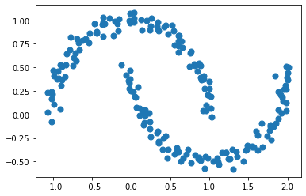

Concept - Data Mining Similarity Measures¶
Understanding basic data science concepts - euclidean distance, pearson correlation, clustering, PCA dimension reduction, supervised learning.
Euclidean Score¶
%matplotlib inline
import pandas as pd
import matplotlib.pyplot as plt
import seaborn as sns
import numpy as np
#Function to compute Euclidean Distance.
def euclidean(v1, v2):
#Convert 1-D Python lists to numpy vectors
v1 = np.array(v1)
v2 = np.array(v2)
#Compute vector which is the element wise square of the difference
diff = np.power(np.array(v1)- np.array(v2), 2)
#Perform summation of the elements of the above vector
sigma_val = np.sum(diff)
#Compute square root and return final Euclidean score
euclid_score = np.sqrt(sigma_val)
return euclid_score
#Define 3 users with ratings for 5 movies
u1 = [5,1,2,4,5]
u2 = [1,5,4,2,1]
u3 = [5,2,2,4,4]
euclidean(u1, u2)
7.483314773547883
euclidean(u1, u3)
1.4142135623730951
Pearson Correlation¶
alice = [1,1,3,2,4]
bob = [2,2,4,3,5]
euclidean(alice, bob)
2.23606797749979
eve = [5,5,3,4,2]
euclidean(eve, alice)
6.324555320336759
from scipy.stats import pearsonr
pearsonr(alice, bob)
(1.0, 0.0)
pearsonr(alice, eve)
(-1.0, 0.0)
Clustering¶
K-Means¶
#Import the function that enables us to plot clusters
from sklearn.datasets.samples_generator import make_blobs
#Get points such that they form 3 visually separable clusters
X, y = make_blobs(n_samples=300, centers=3,
cluster_std=0.50, random_state=0)
#Plot the points on a scatterplot
plt.scatter(X[:, 0], X[:, 1], s=50);
/usr/local/lib/python3.7/dist-packages/sklearn/utils/deprecation.py:144: FutureWarning: The sklearn.datasets.samples_generator module is deprecated in version 0.22 and will be removed in version 0.24. The corresponding classes / functions should instead be imported from sklearn.datasets. Anything that cannot be imported from sklearn.datasets is now part of the private API.
warnings.warn(message, FutureWarning)
#Import the K-Means Class
from sklearn.cluster import KMeans
#Initializr the K-Means object. Set number of clusters to 3,
#centroid initilalization as 'random' and maximum iterations to 10
kmeans = KMeans(n_clusters=3, init='random', max_iter=10)
#Compute the K-Means clustering
kmeans.fit(X)
#Predict the classes for every point
y_pred = kmeans.predict(X)
#Plot the data points again but with different colors for different classes
plt.scatter(X[:, 0], X[:, 1], c=y_pred, s=50)
#Get the list of the final centroids
centroids = kmeans.cluster_centers_
#Plot the centroids onto the same scatterplot.
plt.scatter(centroids[:, 0], centroids[:, 1], c='black', s=100, marker='X')
<matplotlib.collections.PathCollection at 0x7f2d91b70e10>
#List that will hold the sum of square values for different cluster sizes
ss = []
#We will compute SS for cluster sizes between 1 and 8.
for i in range(1,9):
#Initlialize the KMeans object and call the fit method to compute clusters
kmeans = KMeans(n_clusters=i, random_state=0, max_iter=10, init='random').fit(X)
#Append the value of SS for a particular iteration into the ss list
ss.append(kmeans.inertia_)
#Plot the Elbow Plot of SS v/s K
sns.pointplot(x=[j for j in range(1,9)], y=ss)
<matplotlib.axes._subplots.AxesSubplot at 0x7f2d91b38a50>
#Import the half moon function from scikit-learn
from sklearn.datasets import make_moons
#Get access to points using the make_moons function
X_m, y_m = make_moons(200, noise=.05, random_state=0)
#Plot the two half moon clusters
plt.scatter(X_m[:, 0], X_m[:, 1], s=50);

#Initialize K-Means Object with K=2 (for two half moons) and fit it to our data
kmm = KMeans(n_clusters=2, init='random', max_iter=10)
kmm.fit(X_m)
#Predict the classes for the data points
y_m_pred = kmm.predict(X_m)
#Plot the colored clusters as identified by K-Means
plt.scatter(X_m[:, 0], X_m[:, 1], c=y_m_pred, s=50)
<matplotlib.collections.PathCollection at 0x7f2d89a75f90>
#Import Spectral Clustering from scikit-learn
from sklearn.cluster import SpectralClustering
#Define the Spectral Clustering Model
model = SpectralClustering(n_clusters=2, affinity='nearest_neighbors')
#Fit and predict the labels
y_m_sc = model.fit_predict(X_m)
#Plot the colored clusters as identified by Spectral Clustering
plt.scatter(X_m[:, 0], X_m[:, 1], c=y_m_sc, s=50);
/usr/local/lib/python3.7/dist-packages/sklearn/manifold/_spectral_embedding.py:236: UserWarning: Graph is not fully connected, spectral embedding may not work as expected.
warnings.warn("Graph is not fully connected, spectral embedding"
Dimensionality Reduction¶
Principal Component Analysis¶
# Load the Iris dataset into Pandas DataFrame
iris = pd.read_csv("https://archive.ics.uci.edu/ml/machine-learning-databases/iris/iris.data",
names=['sepal_length','sepal_width','petal_length','petal_width','class'])
#Display the head of the dataframe
iris.head()
| sepal_length | sepal_width | petal_length | petal_width | class | |
|---|---|---|---|---|---|
| 0 | 5.1 | 3.5 | 1.4 | 0.2 | Iris-setosa |
| 1 | 4.9 | 3.0 | 1.4 | 0.2 | Iris-setosa |
| 2 | 4.7 | 3.2 | 1.3 | 0.2 | Iris-setosa |
| 3 | 4.6 | 3.1 | 1.5 | 0.2 | Iris-setosa |
| 4 | 5.0 | 3.6 | 1.4 | 0.2 | Iris-setosa |
#Import Standard Scaler from scikit-learn
from sklearn.preprocessing import StandardScaler
#Separate the features and the class
X = iris.drop('class', axis=1)
y = iris['class']
# Scale the features of X
X = pd.DataFrame(StandardScaler().fit_transform(X),
columns = ['sepal_length','sepal_width','petal_length','petal_width'])
X.head()
| sepal_length | sepal_width | petal_length | petal_width | |
|---|---|---|---|---|
| 0 | -0.900681 | 1.032057 | -1.341272 | -1.312977 |
| 1 | -1.143017 | -0.124958 | -1.341272 | -1.312977 |
| 2 | -1.385353 | 0.337848 | -1.398138 | -1.312977 |
| 3 | -1.506521 | 0.106445 | -1.284407 | -1.312977 |
| 4 | -1.021849 | 1.263460 | -1.341272 | -1.312977 |
#Import PCA
from sklearn.decomposition import PCA
#Intialize a PCA object to transform into the 2D Space.
pca = PCA(n_components=2)
#Apply PCA
pca_iris = pca.fit_transform(X)
pca_iris = pd.DataFrame(data = pca_iris, columns = ['PC1', 'PC2'])
pca_iris.head()
| PC1 | PC2 | |
|---|---|---|
| 0 | -2.264542 | 0.505704 |
| 1 | -2.086426 | -0.655405 |
| 2 | -2.367950 | -0.318477 |
| 3 | -2.304197 | -0.575368 |
| 4 | -2.388777 | 0.674767 |
pca.explained_variance_ratio_
array([0.72770452, 0.23030523])
#Concatenate the class variable
pca_iris = pd.concat([pca_iris, y], axis = 1)
#Display the scatterplot
sns.lmplot(x='PC1', y='PC2', data=pca_iris, hue='class', fit_reg=False)
<seaborn.axisgrid.FacetGrid at 0x7f2d87547150>
#Import LDA
from sklearn.discriminant_analysis import LinearDiscriminantAnalysis
#Define the LDA Object to have two components
lda = LinearDiscriminantAnalysis(n_components = 2)
#Apply LDA
lda_iris = lda.fit_transform(X, y)
lda_iris = pd.DataFrame(data = lda_iris, columns = ['C1', 'C2'])
#Concatenate the class variable
lda_iris = pd.concat([lda_iris, y], axis = 1)
#Display the scatterplot
sns.lmplot(x='C1', y='C2', data=lda_iris, hue='class', fit_reg=False)
<seaborn.axisgrid.FacetGrid at 0x7f2d874c96d0>
Supervised Learning¶
Gradient Boosting¶
#Divide the dataset into the feature dataframe and the target class series.
X, y = iris.drop('class', axis=1), iris['class']
#Split the data into training and test datasets.
#We will train on 75% of the data and assess our performance on 25% of the data
#Import the splitting funnction
from sklearn.model_selection import train_test_split
#Split the data into training and test sets
X_train, X_test, y_train, y_test = train_test_split(X, y, test_size=0.25, random_state=0)
#Import the Gradient Boosting Classifier
from sklearn.ensemble import GradientBoostingClassifier
#Apply Gradient Boosting to the training data
gbc = GradientBoostingClassifier()
gbc.fit(X_train, y_train)
#Compute the accuracy on the test set
gbc.score(X_test, y_test)
0.9736842105263158
#Display a bar plot of feature importances
sns.barplot(x= ['sepal_length','sepal_width','petal_length','petal_width'], y=gbc.feature_importances_)
<matplotlib.axes._subplots.AxesSubplot at 0x7f2d870ff290>